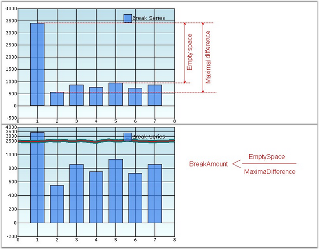
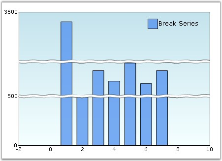

Breaks are very useful if you add points with too large difference in values. To enable breaks, you need to set the ChartAxis.MakeBreaks property to true and set the break mode (ChartAxis.BreakRanges.BreaksMode property).
There are three possible modes. They are:
· ChartBreaksMode.None - If this value is set, breaks are not used.
· ChartBreaksMode.Manual (default) - If this value is set, you can manually set the breaks ranges. To do this, use following methods.
· ChartAxis.BreakRanges.Union – add a new break range.
· ChartAxis.BreakRanges.Exclude – remove the break range.
· ChartAxis.BreakRanges.Clear – remove all break ranges.
· ChartBreaksMode.Auto - If this mode is enabled, chart will compute the breaks ranges automatically. You can use the ChartAxis.BreakRanges.BreakAmount to set the minimal relative difference between values (default value is 0.1, value range is 0.1 ). The ratio of empty space should be less than the property value to break the range.
· This mode has several exclusions.
· Breaks are computed only for actual y-axis of series.
· Breaks don't work with zooming.
· Breaks don't work with stacking.
All breaks work only with decart axes.

Figure 268: Illustrates Chart BreakAmount Value
|
[C#]
this.ChartWebControl1.PrimaryYAxis.MakeBreaks = true;
this.ChartWebControl1.PrimaryYAxis.BreakRanges.BreaksMode = ChartBreaksMode.Manual; this.ChartWebControl1.PrimaryYAxis.BreakRanges.Union(new DoubleRange(500, 600)); this.ChartWebControl1.PrimaryYAxis.BreakRanges.Union(new DoubleRange(950, 3000));
this.ChartWebControl1.PrimaryYAxis.BreakInfo.LineType = ChartBreakLineType.Wave; this.ChartWebControl1.PrimaryYAxis.BreakInfo.LineSpacing = 5; this.ChartWebControl1.PrimaryYAxis.BreakInfo.LineColor = Color.Black; this.ChartWebControl1.PrimaryYAxis.BreakInfo.LineWidth = 1; this.ChartWebControl1.PrimaryYAxis.BreakInfo.LineStyle = DashStyle.Dot; this.ChartWebControl1.PrimaryYAxis.BreakInfo.SpacingColor = Color.White; this.ChartWebControl1.PrimaryYAxis.BreakRanges.BreakAmount = 0.5; |
|
[VB.NET]
Me.ChartWebControl1.PrimaryYAxis.MakeBreaks = True
Me.ChartWebControl1.PrimaryYAxis.BreakRanges.BreaksMode = ChartBreaksMode.Manual Me.ChartWebControl1.PrimaryYAxis.BreakRanges.Union(New DoubleRange(500, 600)) Me.ChartWebControl1.PrimaryYAxis.BreakRanges.Union(New DoubleRange(950, 3000))
Me.ChartWebControl1.PrimaryYAxis.BreakInfo.LineType = ChartBreakLineType.Wave Me.ChartWebControl1.PrimaryYAxis.BreakInfo.LineSpacing = 5 Me.ChartWebControl1.PrimaryYAxis.BreakInfo.LineColor = Color.Black Me.ChartWebControl1.PrimaryYAxis.BreakInfo.LineWidth = 1 Me.ChartWebControl1.PrimaryYAxis.BreakInfo.LineStyle = DashStyle.Dot Me.ChartWebControl1.PrimaryYAxis.BreakInfo.SpacingColor = Color.White Me.ChartWebControl1.PrimaryYAxis.BreakRanges.BreakAmount = 0.5 |

Figure 269: Chart BreakAmount = 0.5